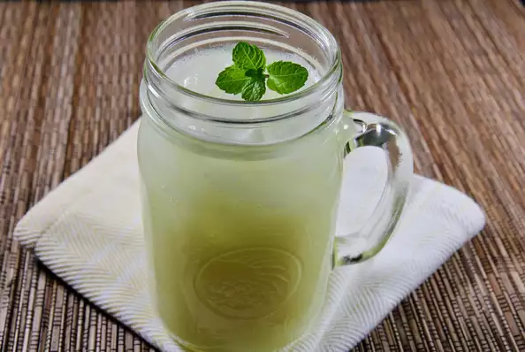

Southern-Style Vanilla Lemonade

Description
This vanilla-scented lemonade provides a real lemon kick that's great for
hot summer days! Serve over ice or frozen lemonade cubes.
Ingridients
- 4 lemons
- ¾ cup white sugar
- ¼ teaspoon vanilla extract
- 6 cups cold water
Steps:
-
Cut the lemons in half and scoop the pulp into a blender. Add half of
the rinds along with sugar, vanilla extract, and 2 cups of water.
Blend until smooth, then strain into a serving pitcher and stir in
the remaining water.